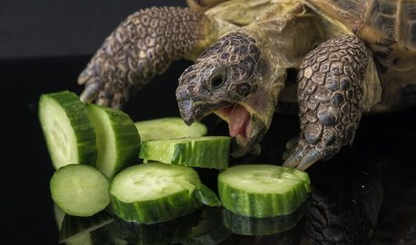

Wild Rescue is a registered nonprofit wildlife rescue and rehabilitation facility, located in Ocala, Florida. We help injured, sick, neglected, and orphaned wildlife. We help rehabilitate these animals and then relese them back into the wild, if possible.
Wild Rescues is a member of the National Wildlife Rehabilitators Association
